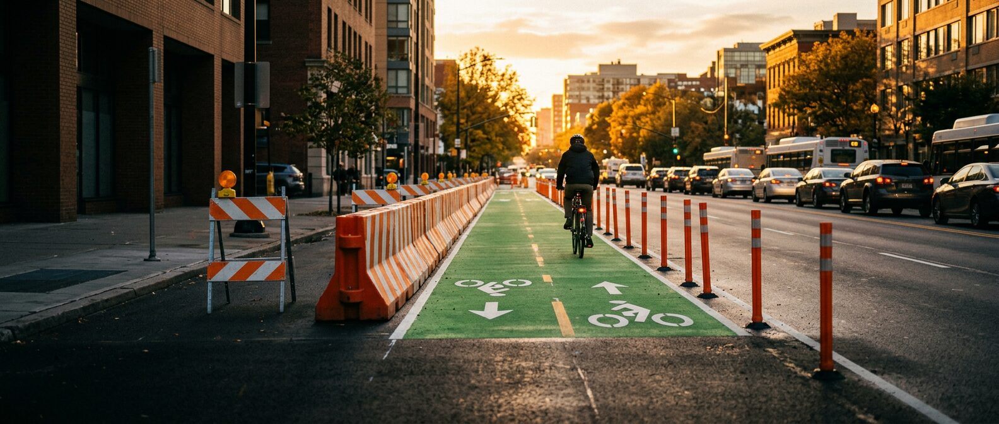

Creator Media Kit 2026
MR. BARRICADE
Vignesh Swaminathan, PE · @mrbarricade
The engineer who made 1.6 million people fall in love with bike lanes, drainage and safer streets.
A licensed civil engineer who makes street design entertaining. Young, US-heavy audience that acts on what it watches.
Partner with Mr. Barricade
1.6M TikTok followers
78.8M Total likes
1.5M Video views, last 60 days (up 21%)
3.5% Engagement, last 60 days (typical at this size: 1 to 2%)
About the creator
The voice of streets, drains, and safer cities.
Vignesh Swaminathan is a Bay Area licensed Professional Engineer and transportation planner who became one of the most distinctive voices in urban infrastructure education.
He started in September 2020 with dance videos between Zoom calls and discovered that everyday people are hungry to understand the roads, bike lanes, and intersections they navigate every day. They just needed someone who could explain it with charisma, expertise, and zero pretension.
Licensed PE
Practicing transportation engineer
Ex-Boring Company
Industry speaker
#DrainGang
Unusually loyal and civically engaged. They attend public meetings, advocate for safer streets, and quote his memes on every post.
Audience
Young, mostly American, and finding him through search.
TikTok Studio, last 60 days, as of Oct 2026.
731.8K Unique viewers (619K new)
78.7K Profile views (up 222%)
59.1% Of views from TikTok search: explainers keep getting found long after posting
78% of viewers are in the United StatesViewers by country, % of views
81% are 18 to 34Viewers by age, %
Three in four viewers are menViewers by gender, %
Who watches Mr. Barricade
Civil engineers & planners
Share his explainers with colleagues and reference them in real meetings.
Engaged city residents
Use his videos to push for bike lanes and pedestrian safety in their own cities.
Young people 18 to 34
81% of viewers; newly curious about how cities work.
General public
Everyday road users who suddenly care about intersection design.
Featured content
See it in action.
01 · Most-viewed
Circular Bridge in Uruguay (Laguna Garzón)
16.5M views · 2M likes · 9,960 comments
A stitch celebrating a pedestrian-first bridge design; proof his content travels well beyond U.S. infrastructure.
Watch on TikTok →
02 · Pinned explainer
Different Types of Protected Bike Lane Designs
1.3M views · 32.1K likes
The clean, straight-to-camera format that built his reputation.
Watch on TikTok →
03 · Personality
Graffiti Abatement Is a Science
576K likes · 12.1K saves
The mustache, the expressions, the enthusiasm: why a sponsor mention feels native, not forced.
Watch on TikTok →
04 · Top Instagram post
Corner radius and pedestrian safety
"A tighter corner slows the turning car. A wider corner kills the pedestrian waiting to cross."
Recent hit: maritime engineering stitch, 258K views and 289 new followers (Jul 2026). Full library: tiktok.com/@mrbarricade
Where brands fit
Products that belong on the street, the commute and the reading list.
E-bikes and folding/cargo bikes
Ride real San Jose streets and explain the design as I ride; the full multimodal commute (ride, fold, Caltrain, ride) in a suit.
Cameras and filming gear
"How I film street design" breakdowns; a wide or 360 view shows a whole intersection at once.
Books, audiobooks and learning
Urbanism and engineering reading lists (e.g. Walkable City , The Power Broker ); "how to become an engineer" content.
Menswear and everyday carry
The engineer in a suit on site visits and bike commutes.
Dog gear
Dosa, my mini dachshund, riding along in protected bike lanes.
Travel and transit apps
Navigating cities by train, bus and bike.
How I work with brands
Educational, engineer-led content where the product appears in real use. Every sponsored post is clearly disclosed (#ad / paid partnership).
Affiliate links
Gifted product
Paid integrations
Usage rights
Audience 78% US, 81% aged 18 to 34. Contact: vig.nathan@gmail.com
Partnership packages
From a single post to a season-long retainer.
All rates negotiable based on scope · valid through December 2026.
Package
Rate
Per
Includes
Sponsored TikTok post
$5,000
Video
One integration woven into a field walkthrough or explainer; 60-day usage rights
TikTok + Instagram bundle
$7,500
Campaign
1 TikTok + 1 Reel + story mentions
Brand ambassador retainer 3-month minimum
$3,000
Month
2 posts/month + mentions + link in bio
Suit & menswear integration
$4,500
Video
Outfit of the Commute series
$6,000
Month
Style + Streets bundle
$8,500
Campaign
Grooming / self-care sponsor
$3,500
Video
Unboxing / review post
$2,500
Post
Keynote / speaking
$5,000 + travel
Event
30 to 60 min keynote or panel: urban planning, mobility, engineering careers
Newsletter sponsorship
$750
Issue
Upcoming Substack on urban infrastructure
Style crossover
The engineer who dresses the part.
He's known for suits and the mustache on camera: a rare crossover between engineering credibility and menswear.
Ideal categories
Menswear & tailoring
Grooming
E-bikes & micromobility
Transit & navigation apps
Learning platforms & engineering exam prep
Design software
Urbanism media & books
Speaking & recognition
Trusted on stage, in civic roles and in the press.
Speaking
Featured speaker and panelist at the Strong Towns National Gathering.
Civic leadership
Former Chair, Cupertino Sustainability Commission
Former Chair, VTA Citizens Advisory Committee
As seen in
CBS San Francisco, MEL Magazine, Streetsblog SF, ITS International, Cities Today, SFGate, Mercury News.
Podcasts: Strong Towns, The War on Cars.
What makes a great partnership
Real products, in his own voice, over time.
Works well
Integration into a real walkthrough or explainer Yes Products he actually uses Yes Brands aligned with mobility, safety, learning or sustainability Yes Creative freedom in his own voice Yes Longer partnerships that build trust Yes
Doesn't work
Rigid scripts No Products unrelated to cities, engineering or his style No One-off posts with no real connection No Endorsing something he hasn't tried No Content that talks down to a technically literate audience No